🌱 Empezar Antes de Estar Listo
Siempre pensé que para hacer algo tenía que estar completamente preparado. Tener el plan perfecto, el diseño perfecto, la idea perfecta. Pero la verdad es que casi nada en la vida empieza perfecto.
Este blog nació así: sin tener todo claro, sin saber exactamente de qué va a tratar, pero con la intención de empezar.
Vivimos en una época donde vemos proyectos increíbles todos los días. Entramos a páginas web minimalistas, con animaciones suaves, tipografías elegantes y contenido que parece escrito por alguien que ya lo tiene todo resuelto. Y sin darnos cuenta, nos comparamos. Pensamos: “Cuando mi proyecto esté así de bien, entonces lo publico”.
Pero ese es el error.
Ningún proyecto empezó siendo increíble. Ninguna persona empezó sabiendo todo. Cada diseñador que hoy tiene un portafolio espectacular alguna vez abrió una página en blanco sin saber qué hacer con ella.
Este blog no busca ser perfecto. Busca ser real.
Busca documentar el proceso. Los intentos fallidos. Los cambios de diseño. Las ideas que funcionan y las que no. Porque muchas veces creemos que el valor está en el resultado final, cuando en realidad el verdadero crecimiento está en el proceso.
Crear algo propio da miedo. Publicarlo da más miedo. Pero no hacer nada da una sensación todavía peor: la de quedarse con las ganas.
Por eso hoy decido empezar antes de estar listo.
Tal vez este blog cambie de tema en el futuro. Tal vez el diseño que hoy me encanta mañana me parezca horrible. Tal vez descubra nuevas ideas que transformen completamente lo que quiero hacer.
Y está bien.
Porque este espacio no es para demostrar que sé todo. Es para demostrar que estoy aprendiendo.
Si estás leyendo esto en el futuro, o si esto solo está aquí como texto de prueba mientras diseño la web, quiero que recuerdes algo:
No necesitas tenerlo todo claro para empezar.
No necesitas sentirte experto.
No necesitas que sea perfecto.
Solo necesitas dar el primer paso.
Y este es el mío.
🕰️ El Arte de Construir Algo Desde Cero
Hay algo extraño en empezar desde cero.
Una página en blanco no tiene errores. No tiene historia. No tiene fracasos. Tampoco tiene identidad. Es un espacio limpio, silencioso, esperando que alguien lo llene de intención.
Cuando decides crear algo —un blog, un proyecto, una idea— lo primero que aparece no es la inspiración. Es la duda.
¿Y si no es suficiente?
¿Y si nadie lo lee?
¿Y si no soy tan bueno como creo?
Pero lo curioso es que esas preguntas aparecen siempre, incluso cuando ya sabes hacer las cosas. La inseguridad no desaparece con la experiencia; solo cambia de forma.
Este blog no nace porque tenga todas las respuestas. Nace porque quiero hacerme mejores preguntas.
¿Qué quiero construir?
¿Qué quiero decir?
¿Qué tipo de persona quiero ser mientras lo construyo?
Crear algo propio es un acto de responsabilidad. Significa que ya no puedes culpar a nadie si no avanza. No puedes esperar que otro lo haga por ti. Es tu idea, tu diseño, tu espacio.
Y eso asusta… pero también libera.
Porque cuando construyes desde cero, tienes el poder de decidir cada detalle. Los colores. Las palabras. El ritmo. El silencio entre los párrafos.
No se trata solo de publicar contenido. Se trata de dejar pequeñas piezas de pensamiento en el tiempo.
Quizás hoy esto solo sea texto de prueba mientras diseño la web. Quizás mañana sea el inicio de algo más grande. Pero incluso si nadie más lo ve, habrá valido la pena.
Porque crear no siempre es para los demás.
A veces crear es para recordarte que puedes hacerlo.
Y eso ya es suficiente.
☕ Notas de un Proyecto que Aún No Existe
Hoy no tengo claro de qué va a tratar este blog.
No sé si será sobre ideas, sobre diseño, sobre pensamientos que me aparecen a las tres de la mañana o simplemente sobre el proceso de intentar construir algo propio sin rendirme a la mitad.
Lo único que sé es que quería empezar.
Es curioso cómo a veces esperamos “el momento correcto”. El día en que tengamos más tiempo. Más claridad. Más energía. Pero la verdad es que casi nunca llega ese día perfecto. Siempre hay algo pendiente, algo incompleto, algo que podría estar mejor.
Así que decidí hacerlo así: imperfecto.
Primero quiero diseñar. Jugar con tipografías. Cambiar colores veinte veces. Mover botones dos píxeles a la izquierda y luego devolverlos a donde estaban. Disfrutar esa parte técnica, visual, casi obsesiva.
El contenido vendrá después.
O tal vez no.
Tal vez el contenido es esto mismo: el proceso. La duda. La construcción lenta. Las ganas mezcladas con pereza. La emoción mezclada con inseguridad.
Hay algo especial en empezar algo que todavía no tiene forma. Es como plantar una semilla sin saber exactamente qué tipo de árbol será. Solo sabes que, si la cuidas, algo crecerá.
Y eso es suficiente por ahora.
Si en algún momento vuelvo a leer esta entrada, quiero recordar esta sensación: la de estar en el inicio. La de no saber, pero aun así avanzar.
Porque al final, los proyectos no empiezan cuando están listos.
Empiezan cuando alguien decide que ya es hora.
Y hoy decidí que era hora.
El mito de “aún no es mi momento”
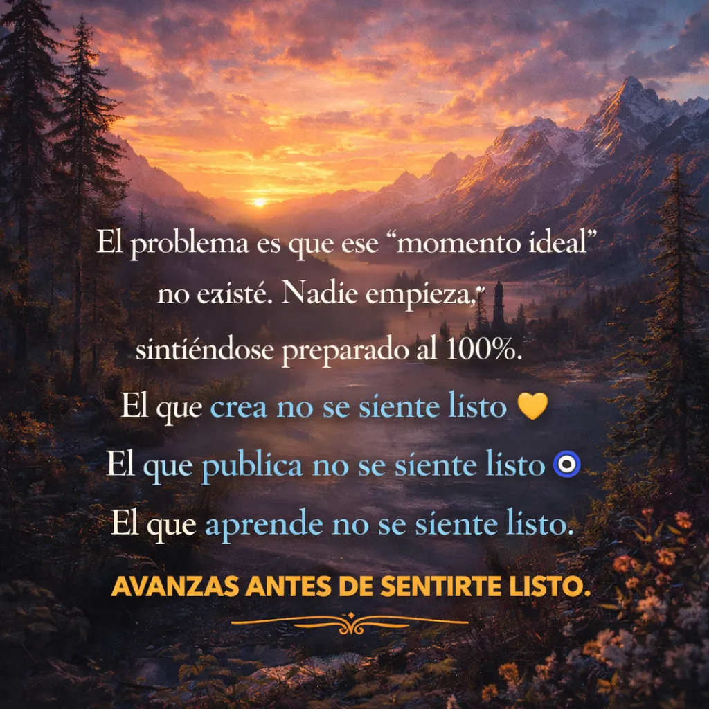
Hay una frase que suena responsable, madura e incluso inteligente:
“Aún no es mi momento.”
La repetimos cuando queremos empezar algo nuevo.
Cuando pensamos en aprender una habilidad.
Cuando imaginamos crear un proyecto.
Cuando soñamos con hacer algo más grande.
La decimos con calma, como si fuera una decisión estratégica.
Pero muchas veces no es estrategia.
Es miedo.
La trampa invisible
“Aún no es mi momento” suena mejor que decir:
“Tengo miedo de no ser suficiente.”
“Tengo miedo de fallar.”
“Tengo miedo de que otros me juzguen.”
“Tengo miedo de intentarlo y no lograrlo.”
Así que lo disfrazamos.
Lo convertimos en prudencia.
En planificación.
En “esperar el momento ideal”.
El problema es que ese momento ideal no existe.
Nadie se siente listo
Nadie empieza sintiéndose preparado al 100%.
El que crea su primer negocio no se siente listo.
El que publica su primer proyecto no se siente listo.
El que aprende una nueva habilidad no se siente listo.
La preparación real no ocurre antes de empezar.
Ocurre mientras avanzas.
La ilusión de la mejora previa
Muchas personas creen que deben mejorar “un poco más” antes de empezar.
Aprender un curso más.
Ver un tutorial más.
Esperar un año más.
Tener más experiencia.
Pero mejorar sin aplicar es como entrenar sin competir nunca.
El crecimiento verdadero aparece cuando hay fricción.
Cuando hay exposición.
Cuando algo está en juego.
El tiempo no te valida, la acción sí
No es el paso de los años lo que cambia las cosas.
Es la acumulación de intentos.
El mundo no premia la intención.
Premia la ejecución.
No importa cuánto potencial tenga alguien.
Si no actúa, ese potencial se queda en teoría.
El momento perfecto es incómodo
Curiosamente, el momento real de empezar casi siempre se siente así:
Inseguro.
Prematuro.
Improvisado.
Incompleto.
Y eso es normal.
Si se sintiera cómodo, no sería crecimiento.
La pregunta correcta
En lugar de preguntar:
“¿Estoy listo?”
Tal vez la pregunta debería ser:
“¿Qué pierdo si empiezo ahora?”
Muchas veces la respuesta es clara:
Se pierde más esperando que intentando.
El verdadero riesgo
El mayor riesgo no es fallar.
Es acostumbrarse a posponer.
Porque cuando posponer se vuelve hábito, el tiempo empieza a pasar más rápido que las ideas.
Y un día, lo que parecía “aún no” se convierte en “demasiado tarde”.
No existe una señal externa que confirme que ya puedes empezar.
El único punto de inicio real es la decisión.
Y casi siempre llega antes de sentirse preparado.
El día en que casi empiezas
Hay un día curioso que se repite muchas veces en la vida de las personas.
No tiene una fecha específica en el calendario.
No es un evento importante.
Nadie lo celebra.
Pero ocurre más de lo que imaginamos.
Es el día en que casi empiezas algo.
Ese día en que piensas en cambiar algo de tu vida.
En aprender algo nuevo.
En intentar una idea que lleva tiempo rondando en tu cabeza.
Durante unos minutos la posibilidad se siente real.
Podrías hacerlo.
Podrías empezar.
Pero casi siempre pasa algo.
Una duda.
Una excusa razonable.
Un pensamiento que parece lógico.
Y entonces decides esperar un poco más.
Lo curioso es que esperar se siente prudente.
Parece una decisión inteligente.
Pero muchas veces lo que realmente estamos haciendo es evitar la incomodidad de empezar.
Porque mientras una idea está en tu mente, es perfecta.
No tiene errores.
No tiene críticas.
No tiene resultados mediocres.
Pero en el momento en que empiezas algo real, la perfección desaparece.
Aparecen los errores.
Las dudas.
La sensación de no saber exactamente qué estás haciendo.
Y eso es normal.
De hecho, casi todas las personas que comienzan algo nuevo se sienten así.
Nadie empieza completamente listo.
La confianza rara vez aparece antes de la acción.
Normalmente aparece después.
Después de intentar.
Después de equivocarse.
Después de darse cuenta de que el mundo no se derrumba cuando algo no sale perfecto.
El problema es que muchas personas esperan sentirse seguras primero.
Esperan el momento correcto.
Más experiencia.
Más tiempo.
Más preparación.
Pero el momento perfecto casi nunca llega.
Y mientras tanto, la idea se queda viviendo solo en la imaginación.
Los meses pasan.
A veces los años.
Y un día miras hacia atrás y piensas que tal vez podrías haber empezado antes.
No con un gran arrepentimiento.
Solo con curiosidad.
Porque muchas cosas importantes no empiezan con grandes planes.
Empiezan con algo pequeño.
Un primer intento.
Un pequeño paso.
Una acción imperfecta.
Algo tan simple que parece insignificante.
Pero esa pequeña acción cambia algo importante.
Rompe la inercia.
La diferencia entre quienes hacen cosas y quienes solo las imaginan muchas veces no es talento.
Es decisión.
La decisión de empezar aun cuando no todo está claro.
Porque esperar raramente trae más claridad.
La acción sí.
Y tal vez eso es lo único que hace falta.
Que hoy no sea otro de esos días en los que casi empiezas.
Que esta vez no se quede en “casi”.
El cansancio que no es sueño
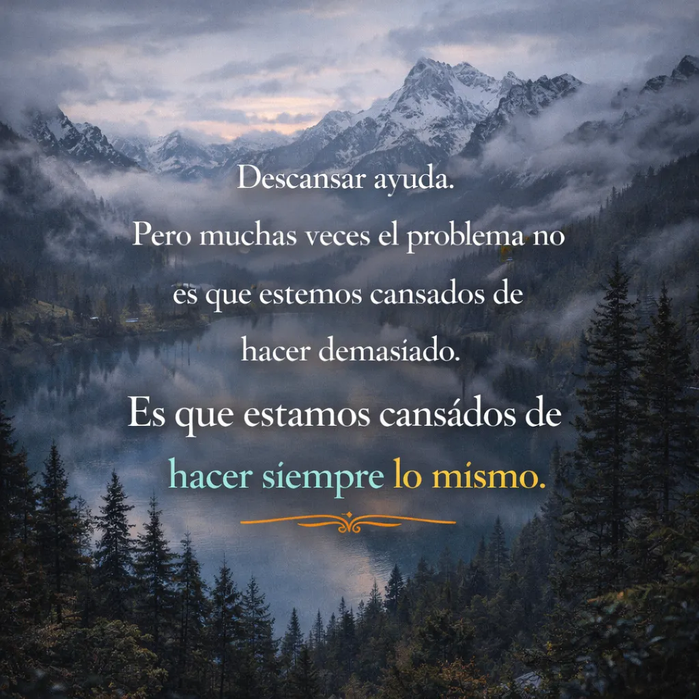
Hay un tipo de cansancio que no se arregla durmiendo.
Puedes dormir ocho horas.
Puedes levantarte a una hora razonable.
Puedes seguir la misma rutina de siempre.
Y aun así, sentirte agotado.
No es un cansancio físico.
Es otro tipo de peso.
Uno más silencioso.
Ese que aparece cuando los días empiezan a sentirse demasiado parecidos entre sí.
Muchas personas viven con ese cansancio sin notarlo del todo.
Cumplen con lo que tienen que hacer.
Van al trabajo o estudian.
Responden mensajes.
Terminan el día.
Y luego el siguiente día empieza exactamente igual.
Nada está realmente mal.
Pero tampoco hay algo que se sienta verdaderamente vivo.
Es una sensación extraña, porque desde afuera todo parece normal.
La vida sigue funcionando.
Pero por dentro algo se siente… plano.
A veces creemos que ese cansancio es falta de descanso.
O que simplemente necesitamos vacaciones.
Y claro, descansar ayuda.
Pero muchas veces el problema no es que estemos cansados de hacer demasiado.
Es que estamos cansados de hacer siempre lo mismo.
La rutina, cuando se repite demasiado, empieza a desgastar algo que no se ve.
La sensación de estar avanzando.
Los seres humanos necesitan sentir progreso.
No necesariamente algo enorme.
No tiene que ser un cambio radical.
Pero sí alguna señal de movimiento.
Aprender algo.
Mejorar en algo.
Intentar algo nuevo.
Algo que rompa la sensación de que el tiempo solo está pasando.
Porque cuando los días se sienten idénticos durante mucho tiempo, aparece una pregunta silenciosa:
“¿Esto es todo?”
No se dice en voz alta.
Pero aparece.
Lo curioso es que muchas veces la solución no es tan grande como imaginamos.
No hace falta cambiar toda la vida.
A veces basta con introducir algo pequeño que no estaba ahí antes.
Una nueva habilidad.
Un proyecto personal.
Una idea que siempre nos dio curiosidad.
Algo que no hacemos por obligación.
Algo que hacemos porque nos interesa.
Cuando eso aparece, algo cambia.
Los días siguen teniendo responsabilidades.
El trabajo sigue existiendo.
Los problemas siguen ahí.
Pero hay algo distinto.
Hay algo que se está construyendo.
Y esa sensación, aunque sea pequeña, tiene un efecto curioso.
Devuelve energía.
No porque la vida sea perfecta.
Sino porque deja de sentirse completamente repetida.
Tal vez por eso muchas personas confunden cansancio con falta de motivación.
Cuando en realidad lo que falta no es energía.
Lo que falta es dirección.
Algo que nos recuerde que no solo estamos ocupando el tiempo.
También lo estamos usando.
Porque cuando hay algo que te interesa construir, incluso lentamente, el tiempo se siente diferente.
Los días ya no son solo una secuencia de tareas.
Se convierten en pasos.
Pequeños, imperfectos, a veces lentos.
Pero pasos al fin y al cabo.
Y a veces eso es suficiente para que ese cansancio extraño empiece a desaparecer.
No porque estés haciendo menos.
Sino porque, por fin, sientes que algo se está moviendo.
La sensación de que el tiempo pasa demasiado rápido
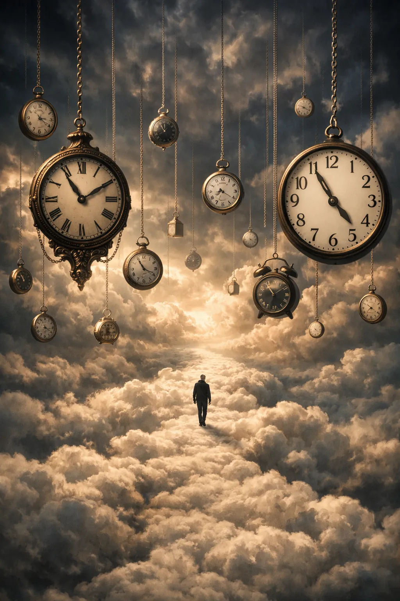
Hay un momento extraño que le pasa a mucha gente.
Miras el calendario y te das cuenta de que ya pasaron varios meses.
A veces incluso años.
Y la reacción casi siempre es la misma:
“¿En qué momento pasó tanto tiempo?”
No es que no recuerdes nada.
Recuerdas trabajar.
Recuerdas estudiar.
Recuerdas los días normales.
Pero todo se siente como si hubiera pasado demasiado rápido.
La vida adulta tiene algo curioso.
Al principio pensamos que el tiempo se vuelve más rápido porque tenemos más responsabilidades.
Pero no siempre es solo eso.
Muchas veces el tiempo parece acelerarse porque dejamos de vivir cosas nuevas.
Cuando somos niños, todo es nuevo.
Primer día de escuela.
Primer amigo.
Primeros lugares.
El cerebro presta mucha atención.
Por eso esos años parecen tan largos cuando los recordamos.
Pero cuando la vida se vuelve rutina, el cerebro deja de registrar tantos momentos.
Los días empiezan a parecerse entre sí.
Y cuando miras hacia atrás, todo se mezcla.
No porque no hayas hecho nada.
Sino porque casi todo fue igual.
Por eso a veces una sola experiencia distinta puede cambiar la sensación de todo un año.
Aprender algo nuevo.
Empezar un proyecto.
Ir a lugares diferentes.
Hacer algo que nunca habías intentado.
No tiene que ser algo enorme.
Solo tiene que ser algo que rompa la repetición.
Porque el tiempo no se vuelve más lento.
Pero la vida sí puede volverse más memorable.
Y cuando los días dejan de parecer copias unos de otros, pasa algo curioso:
El tiempo sigue pasando…
pero ya no se siente como si estuviera desapareciendo.
Algún día entenderás que ese momento era el último
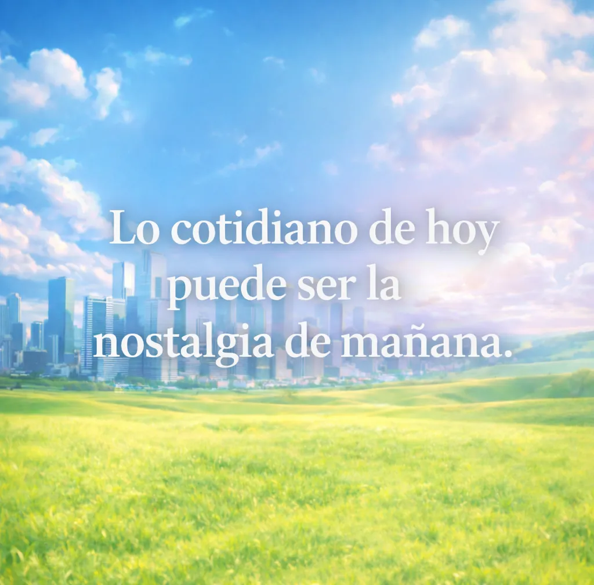
El otro día me di cuenta de algo que me dolió más de lo que esperaba: la vida está llena de últimos momentos que no sabemos que lo son. Últimas conversaciones, últimos abrazos, últimas veces que escuchamos una voz que creíamos eterna. Y pasan desapercibidos, escondidos entre la rutina, entre la prisa, entre los “luego hablamos”.
A veces creemos que el tiempo es infinito. Que siempre habrá otra tarde para visitar a alguien, otro día para decir “te quiero”, otra oportunidad para arreglar lo que quedó roto. Pero el tiempo no avisa cuando se está terminando un capítulo. Simplemente sigue avanzando, silencioso, mientras nosotros seguimos pensando que aún queda mucho por vivir.
Hay recuerdos que regresan sin pedir permiso. El sonido de una risa que ya no está. Un olor que nos transporta a una casa que ya no existe. Una canción que de repente pesa demasiado porque nos recuerda a alguien que ya no podemos llamar. Y en esos momentos entendemos que la nostalgia no es solo recordar… es sentir el amor que no tuvo dónde quedarse.
Todos llevamos pequeñas ausencias dentro del pecho. Personas que ya no caminan a nuestro lado, versiones de nosotros que se quedaron en el pasado, sueños que no encontraron su momento. Y aun así seguimos adelante, como si el corazón supiera reconstruirse una y otra vez, incluso cuando está lleno de grietas.
A veces me pregunto cuántas veces alguien nos extraña en silencio. Cuántas veces alguien piensa en nosotros mientras mira una foto antigua o mientras camina por un lugar donde estuvimos juntos. Hay amores, amistades y momentos que no terminan de irse nunca; simplemente aprenden a vivir en la memoria.
Quizás por eso lo único verdaderamente importante es lo que hacemos mientras todo todavía está aquí. Decir lo que sentimos aunque dé miedo. Abrazar un poco más fuerte. Escuchar con más atención. Porque un día, sin darnos cuenta, ese momento cotidiano que hoy parece normal se convertirá en un recuerdo que daríamos todo por volver a vivir.
Y cuando llegue ese día, ojalá podamos mirar atrás y sentir que amamos lo suficiente, que fuimos lo suficientemente valientes para quedarnos, para cuidar, para decir lo que el corazón llevaba dentro.
Porque al final, cuando todo pasa y el tiempo sigue su camino, lo único que realmente permanece no son los días… sino las personas que lograron vivir dentro de nosotros para siempre.
Las personas que ya no somos
Hay un momento en la vida en el que miras atrás y te das cuenta de que extrañas a alguien que ya no existe… y lo más extraño es que ese alguien eras tú.
La persona que fuiste hace años. La que reía sin pensar demasiado, la que soñaba con todo, la que creía que el mundo era enorme y que había tiempo para absolutamente todo. A veces olvidamos que también perdemos versiones de nosotros mismos por el camino.
Crecemos pensando que cambiar es ganar cosas: más experiencia, más madurez, más conocimiento. Pero nadie nos habla de lo que también dejamos atrás. La inocencia de creer que las personas siempre se quedarán. La tranquilidad de pensar que todo saldrá bien. La facilidad de confiar.
Hay días en los que uno se siente cansado, no físicamente, sino en un lugar más profundo. Como si el corazón estuviera lleno de historias que nadie ve. Son las pequeñas heridas que vamos acumulando: despedidas que no entendimos, palabras que dolieron más de lo que debían, silencios que llegaron de personas que pensábamos que nunca se irían.
Y entonces empiezas a darte cuenta de que crecer no es solo avanzar… también es aprender a convivir con ausencias.
Ausencias de personas, de momentos, de sueños que alguna vez imaginamos con tanta claridad. Cosas que pensábamos que durarían para siempre y que un día simplemente dejaron de estar.
A veces la vida cambia sin hacer ruido. No hay un momento exacto en el que todo se rompe. Simplemente un día miras alrededor y notas que las cosas ya no son como antes. Las conversaciones son diferentes. Las prioridades cambian. Y las personas que antes eran tu mundo ahora son solo recuerdos que aparecen de vez en cuando.
Pero hay algo hermoso incluso en esa tristeza.
Porque cada versión de nosotros que quedó atrás nos construyó de alguna manera. Cada decepción nos enseñó algo. Cada pérdida nos mostró cuánto éramos capaces de amar.
Tal vez nunca volvamos a ser quienes éramos antes. Tal vez esa persona se quedó atrapada en algún momento del pasado, riendo en una tarde que ya terminó. Pero gracias a ella seguimos aquí, con un corazón que, a pesar de todo, todavía sabe sentir.
Y quizá de eso se trata vivir: de seguir cambiando, de seguir perdiendo y encontrando partes de nosotros, de aceptar que el tiempo nos transforma aunque no queramos.
Porque al final, dentro de cada persona adulta, siempre vive en silencio la versión más joven de sí misma… esperando que, de vez en cuando, alguien la recuerde.
El día que ya no pude volver a casa
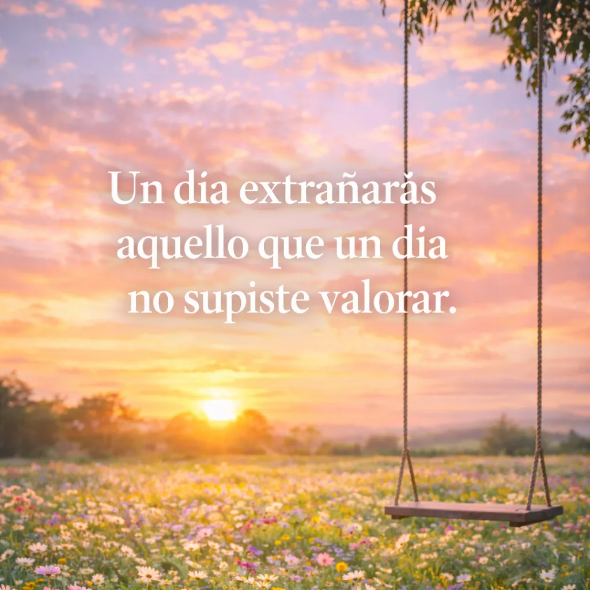
Hay un momento en la vida que nadie nos explica. Un día en el que, sin que pase nada extraordinario, te das cuenta de que ya no puedes volver a casa.
No hablo de una casa de paredes y techo. Hablo de ese lugar invisible donde todo parecía estar bien. Donde eras pequeño, donde la vida era más simple, donde las personas que amabas estaban ahí… como si fueran eternas.
De niño uno piensa que todo va a durar para siempre. Que la risa de tu madre siempre se escuchará en la cocina, que tu padre siempre sabrá qué decir cuando algo duele, que los amigos de la infancia estarán contigo cuando seas viejo. Crecemos creyendo que el mundo es un lugar estable.
Pero el tiempo tiene una forma muy silenciosa de cambiarlo todo.
Un día la casa se queda demasiado silenciosa. Un día alguien ya no se sienta en su lugar de siempre. Un día un número de teléfono deja de responder. Y poco a poco empiezas a entender algo que nunca quisiste aprender: hay personas que se van y se llevan consigo una parte del hogar.
Entonces la vida continúa, porque siempre continúa. Con nuevos lugares, nuevas caras, nuevas rutinas. Aprendes a trabajar, a seguir adelante, a sonreír cuando toca. Pero dentro de ti hay un rincón que sigue guardando algo muy antiguo.
Un recuerdo de cómo se sentía estar a salvo.
A veces ese recuerdo aparece sin avisar. En el olor de una comida que te transporta a la infancia. En una canción que sonaba cuando todo era más sencillo. O en una tarde cualquiera donde, por un segundo, deseas volver atrás… solo para abrazar más fuerte, para quedarte un rato más, para no salir tan rápido por la puerta.
Porque ahora sabes algo que antes no sabías.
Sabes que había momentos que eran irrepetibles.
Sabes que había personas que creías permanentes.
Y sabes que, si pudieras regresar un solo día a ese tiempo, no te importaría nada más. Ni el dinero, ni los problemas, ni el futuro. Solo sentarte ahí otra vez, escuchar las mismas voces, sentir la misma calma.
Pero el tiempo no vuelve.
Y quizá por eso la nostalgia duele tanto: porque no extrañamos solo a las personas… extrañamos quiénes éramos cuando ellas todavía estaban.
Y así seguimos viviendo, con un corazón lleno de recuerdos que ya no pueden repetirse, pero que aún iluminan nuestras noches más silenciosas.
Porque hay hogares que desaparecen del mundo…
pero nunca se van del todo del alma.
Las conversaciones que nunca terminamos
Hay algo profundamente triste en las palabras que nunca llegamos a decir.
A veces creemos que siempre habrá tiempo. Tiempo para esa conversación pendiente, para pedir perdón, para decir “te extraño”, para explicar todo lo que sentimos y que nunca supimos poner en palabras.
Pero la vida tiene una forma extraña de cerrar capítulos sin avisar.
Un día estás hablando con alguien como cualquier otro día. Una conversación normal, sobre cosas pequeñas, sobre planes, sobre la rutina. Nada parece especial. Nada parece importante.
Y entonces, con el paso del tiempo, descubres algo que nunca imaginaste en ese momento:
Esa fue la última conversación.
No hubo despedida especial. No hubo una frase final que sonara importante. No hubo música de fondo ni un presentimiento en el corazón.
Solo palabras comunes.
Palabras que ahora darías todo por volver a escuchar.
Con el tiempo empiezas a recordar detalles que antes no importaban. La forma en que esa persona pronunciaba tu nombre. Las pausas entre sus frases. La manera en que se despedía sin saber que era la última vez.
Y tu mente vuelve una y otra vez a ese momento.
Pensando en todo lo que podrías haber dicho.
Quizá un “quédate un rato más”.
Quizá un “te quiero”.
Quizá simplemente escuchar con más atención.
Pero el pasado es un lugar al que nadie puede regresar.
Así que seguimos viviendo con conversaciones incompletas dentro del pecho. Con frases que nunca encontraron su momento. Con abrazos que se quedaron esperando un día que nunca llegó.
Y es extraño cómo el corazón guarda todo eso.
Porque las personas pueden irse.
El tiempo puede avanzar.
La vida puede cambiar por completo.
Pero las palabras que no dijimos…
esas nunca dejan de doler.
El día que nadie me esperó
Hay un momento en la vida que casi nadie cuenta.
No es cuando pierdes a alguien.
No es cuando lloras.
Ni siquiera cuando todo se rompe.
Es el día en que te das cuenta
de que nadie te estaba esperando.
Ese día no hace ruido.
No hay gritos.
No hay despedidas dramáticas.
Solo una sensación rara.
Como llegar a casa
y notar que las luces están apagadas.
Crecemos pensando que siempre habrá alguien.
Alguien que pregunte cómo estás.
Alguien que note si desapareces.
Alguien que se preocupe si te rompes un poco por dentro.
Pero un día…
te pasa algo importante.
Algo que te cambia.
Y miras alrededor
esperando contarle a alguien.
Y no hay nadie.
No porque el mundo sea cruel.
Sino porque todos
están ocupados viviendo su propia historia.
Sus propios problemas.
Sus propias heridas.
Y en ese momento entiendes algo
que duele más que cualquier despedida.
La mayoría de batallas se luchan solo.
Es extraño.
Porque pasas años pensando que la vida es compartir.
Compartir risas.
Recuerdos.
Momentos importantes.
Pero hay momentos
que nadie ve.
Momentos en los que te rompes
en silencio.
Momentos en los que creces
sin que nadie se dé cuenta.
Momentos en los que aprendes
a levantarte solo.
Y cuando finalmente lo logras…
cuando superas algo que casi te destruye…
cuando vuelves a respirar tranquilo…
miras atrás.
Y te das cuenta de algo curioso.
No hubo aplausos.
No hubo abrazos.
Pero sobreviviste.
Y tal vez
eso sea crecer.
Darte cuenta
de que no siempre habrá alguien esperándote.
Pero aun así
seguir caminando.
Porque aunque nadie vea la batalla…
tú sabes todo lo que tuviste que sobrevivir.
La última vez que alguien pensó en ti
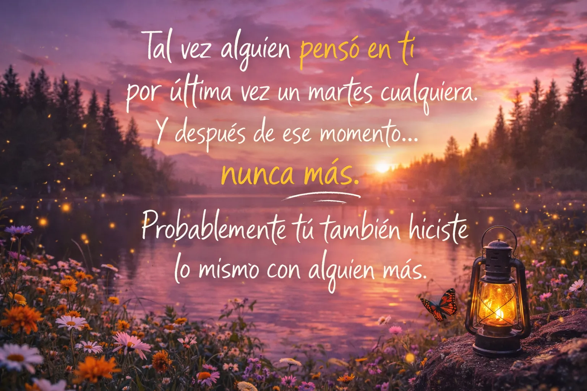
Hay algo triste
que casi nadie nota.
Todos recordamos
la última vez que vimos a alguien.
Pero casi nadie piensa
en la última vez que alguien pensó en nosotros.
Tal vez alguien
pensó en ti por última vez
un martes cualquiera.
Mientras lavaba los platos.
Mientras esperaba el autobús.
Mientras escuchaba una canción
que le recordó tu voz.
Y después de ese momento…
nunca más.
No hubo una despedida.
No hubo una decisión.
Simplemente
la vida siguió avanzando.
Y tu nombre
dejó de aparecer
en sus pensamientos.
Es extraño pensar eso.
Que alguien
que un día sabía tu comida favorita,
tu canción preferida,
y la forma exacta
en la que te reías…
hoy vive su vida
sin recordarte en absoluto.
No porque te odie.
No porque hayas hecho algo mal.
Sino porque así funciona el tiempo.
El tiempo
va borrando las huellas
de las personas
en la mente de los demás.
Un día fuiste
parte de su mundo.
Hoy
eres solo
un recuerdo borroso.
Como una foto vieja
que nadie mira
pero que sigue guardada
en algún cajón.
Y lo más curioso de todo…
es que probablemente
tú también hiciste lo mismo
con alguien más.
Alguien que un día
pensó mucho en ti.
Y que ahora
vive en silencio
en algún rincón olvidado
de tu memoria.
El último mensaje
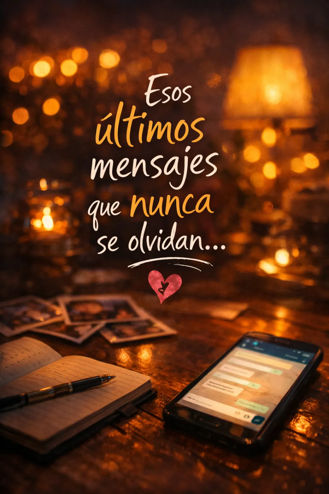
Hay mensajes
que nunca se borran.
No porque sean importantes.
No porque digan algo profundo.
Sino porque fueron los últimos.
A veces abrimos un chat antiguo
solo para ver hasta dónde llegó la historia.
Deslizas hacia arriba
y todo vuelve por un momento.
Los chistes.
Las conversaciones sin sentido.
Los “¿ya llegaste?”
Los “avísame cuando estés en casa”.
Cosas pequeñas
que en su momento parecían nada.
Y entonces llegas al final.
El último mensaje.
Ese que ninguno sabía
que iba a ser el último.
Tal vez fue algo simple.
“Luego hablamos.”
“Cuídate.”
“Oye, mira esto.”
Nada especial.
Nada que suene
a despedida.
Porque la vida
casi nunca avisa
cuando algo se acaba.
Un día hablas con alguien
como siempre.
Y al día siguiente
ya no.
Y después de unos meses
te das cuenta
de que esa conversación
se quedó congelada
en el tiempo.
A veces no fue una pelea.
No pasó nada grande.
Simplemente
la vida movió a cada uno
en direcciones distintas.
Y sin darnos cuenta
dejamos de escribir.
Pero hay algo extraño
cuando vuelves a leerlo.
Te das cuenta
de lo fácil que era todo.
De lo natural que era hablar.
De cómo una persona
podía ser parte de tu rutina
sin que lo pensaras demasiado.
Y entonces entiendes algo
que duele un poco.
No sabías
que estabas viviendo
los últimos momentos
de algo importante.
Nadie lo sabe
mientras ocurre.
Nadie dice:
“Disfruta esto,
porque dentro de un tiempo
solo será un recuerdo.”
Así que ese mensaje
se queda ahí.
Quieto.
Como una puerta
que nunca se cerró del todo.
Y a veces
en noches silenciosas
cuando el mundo está quieto
y la nostalgia aparece sin avisar…
vuelves a ese chat.
No para escribir.
Solo para recordar
que una vez
alguien estaba al otro lado.
Ese olor que ya lo oliste
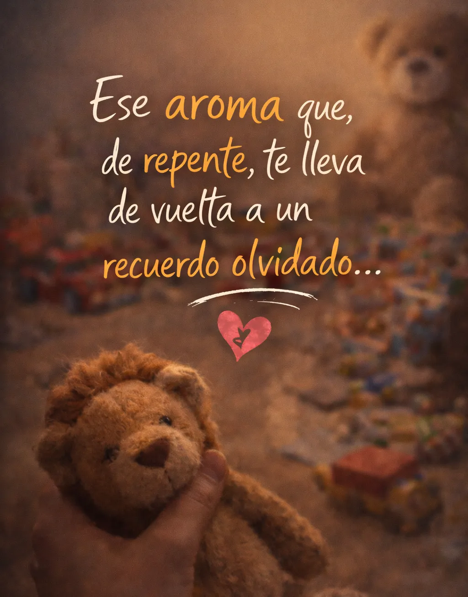
Estoy seguro de que a todos nos ha pasado.
Estamos viviendo nuestra vida, como siempre.
Un día normal.
Y de la nada olemos algo.
Pero es raro.
Sientes que ese olor ya lo oliste
hace muchos años.
Y en un segundo
todo vuelve.
Un lugar.
Una casa.
Una persona.
Un momento que creía olvidado.
Es extraño cómo funciona la memoria.
Puedes olvidar palabras,
rostros,
incluso fechas importantes.
Pero un simple olor
puede abrir una puerta
que pensabas cerrada para siempre.
Dura poco.
Solo unos segundos.
Pero es suficiente
para recordar
cuánto ha cambiado todo.
Quién eras.
Dónde estabas.
Las personas que estaban contigo.
Y cuando el olor desaparece…
todo vuelve a la normalidad.
Sigues caminando.
Sigues con tu día.
Pero por un momento
volviste a ser
la persona que eras
hace muchos años.
Muchas personas lo ignoran.
Porque están apuradas,
porque les recuerda un mal momento,
o porque les recuerda
a una pérdida.
Los olores a veces te recuerdan
algo malo o triste.
Pero hay otros
que te recuerdan cosas buenas.
Momentos nostálgicos.
Amigos.
Personas que amas.
Si algún día te pasa esto,
no sigas como si no hubiera pasado nada.
Tómate un momento
para recordar,
reflexionar,
sentir.
Tal vez los recuerdos
nunca desaparecen.
Solo esperan
el olor correcto
para volver.
El momento en que dejas de ser niño
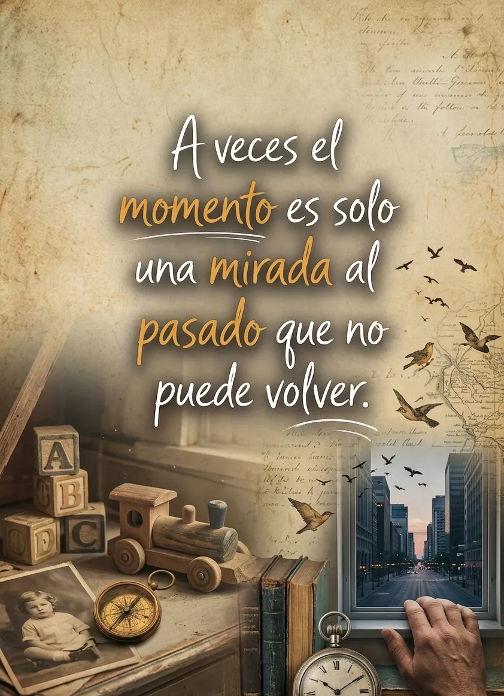
Nadie recuerda exactamente
cuándo dejó de ser niño.
No hay un día marcado en el calendario.
No hay una despedida.
Simplemente pasa.
Un día estás jugando
sin pensar en el tiempo.
Las tardes parecen eternas.
Las preocupaciones no existen.
Y el mundo es un lugar enorme
que todavía quieres descubrir.
Pero poco a poco
algo empieza a cambiar.
Empiezas a entender cosas
que antes no entendías.
Escuchas conversaciones de adultos
y por primera vez
te das cuenta
de que no todo está bien.
Empiezas a notar
que tus padres se cansan.
Que a veces se preocupan.
Que hay problemas
que no pueden esconder.
Y algo dentro de ti
empieza a crecer demasiado rápido.
Un día miras tu casa
y ya no se siente igual.
No porque haya cambiado.
Sino porque tú cambiaste.
Tal vez fue el día
en que entendiste
que tus padres no son invencibles.
O el día
en que perdiste a alguien.
O el día
en que la vida te obligó
a madurar antes de tiempo.
Y sin darte cuenta
las tardes se vuelven más cortas.
Los juegos desaparecen.
Las risas infantiles se vuelven recuerdos.
Y lo que antes era tu mundo entero
se convierte
en algo que solo existe en tu memoria.
A veces lo notas
en cosas muy pequeñas.
En un juguete viejo
que aparece cuando limpias tu cuarto.
En una canción
que escuchabas cuando eras pequeño.
En una foto
donde estás sonriendo
sin preocuparte por nada.
Y por un momento
quisieras volver ahí.
Solo un rato.
Solo una tarde más.
Pero el tiempo
no sabe regresar.
Así que lo único que queda
es ese recuerdo.
El de una época
en la que la vida
todavía era simple.
Y donde ser feliz
era tan fácil
como salir a jugar
antes de que anocheciera.
El día que dejaste de contarle cosas
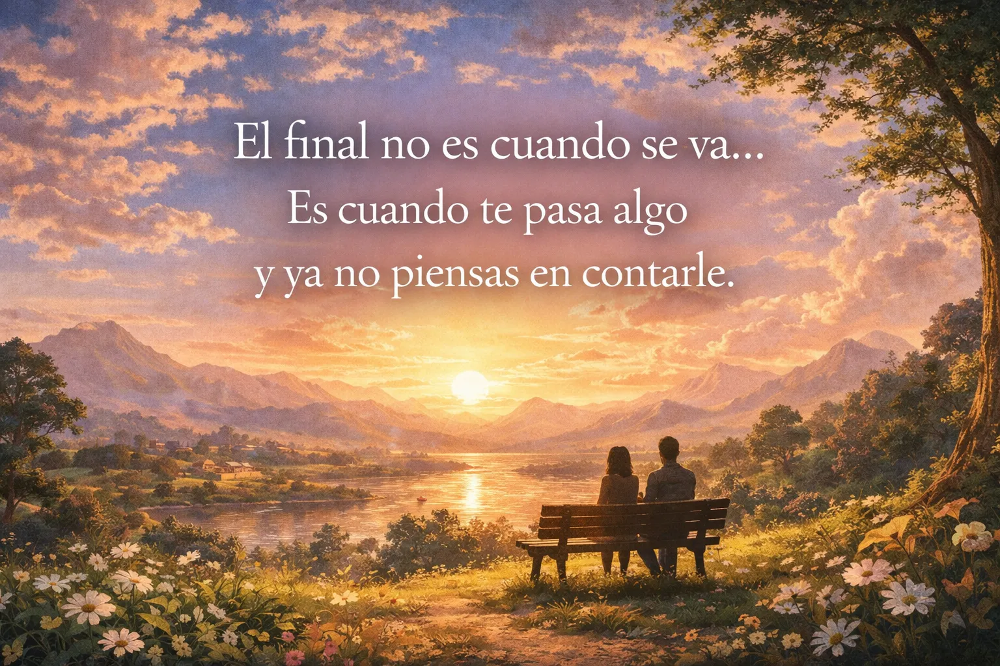
Hay algo que casi nadie nota
cuando una relación se termina.
No es la última pelea.
No es la última vez que se ven.
Ni siquiera es el último mensaje.
Es el día
en que te pasa algo importante…
y ya no piensas
en contárselo.
Durante mucho tiempo
esa persona era la primera
en saberlo todo.
Las cosas buenas.
Las cosas malas.
Las tonterías del día.
Si te pasaba algo gracioso,
se lo contabas.
Si algo te dolía,
también.
Era automático.
Pero un día
algo cambia.
Te pasa algo.
Algo pequeño.
Tal vez viste algo que le habría hecho reír.
Tal vez escuchaste una canción
que antes le mandabas.
Y por un segundo
piensas en escribirle.
Pero no lo haces.
No porque no puedas.
No porque esté prohibido.
Sino porque…
ya no es lo mismo.
Entonces guardas el teléfono.
Sigues con tu día.
Y parece un momento
sin importancia.
Pero en realidad
algo muy grande acaba de pasar.
Porque sin darte cuenta
esa persona dejó de ser
tu primer pensamiento.
Y tal vez
ese es el verdadero final
de muchas historias.
No cuando las personas se van.
Sino cuando
dejan de vivir en tus pensamientos diarios.
Cuando las cosas
que antes querías compartir
empiezan a quedarse
solo contigo.
La última vez que fueron amigos
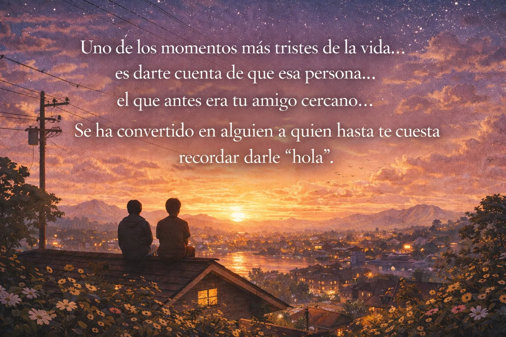
Hay amistades
que no terminan con una pelea.
No hay gritos.
No hay despedidas.
Simplemente…
un día dejan de existir.
Durante años
esa persona era parte de tu vida.
Sabía tus historias.
Tus problemas.
Tus chistes más tontos.
Era alguien con quien
podías hablar sin pensar demasiado.
Se veían seguido.
Tal vez en la escuela.
Tal vez después de clases.
Tal vez en esos momentos
donde el tiempo parecía sobrar.
Y en ese momento
pensabas que siempre sería así.
Que siempre habría tiempo
para verse.
Que siempre habría algo
de qué hablar.
Pero la vida
empieza a moverse.
Uno cambia de rutina.
El otro cambia de lugar.
Las responsabilidades aparecen.
Los horarios dejan de coincidir.
Y las conversaciones
empiezan a espaciarse.
Primero pasan días.
Luego semanas.
Luego meses.
Y un día te das cuenta
de algo extraño.
Hace mucho tiempo
que no sabes nada de esa persona.
Tal vez todavía lo tienes
en tus redes.
Tal vez ves alguna historia
de vez en cuando.
Sabes que sigue existiendo.
Pero ya no forma parte
de tu vida.
Lo curioso
es que no hubo un momento claro
en que todo terminó.
No hubo una última conversación
donde dijeron adiós.
Solo hubo
una última vez que se vieron.
Y ninguno de los dos sabía
que sería la última.
Tal vez se dijeron:
“Nos vemos.”
“Después hablamos.”
“Hay que juntarnos otro día.”
Y ese “otro día”
nunca llegó.
A veces te preguntas
qué habría pasado
si hubieran seguido hablando.
Si hubieran hecho un esfuerzo
por mantener esa amistad.
Pero la verdad es que
la vida sigue avanzando.
Y muchas personas
que fueron muy importantes
terminan siendo
solo parte de tu historia.
No porque dejaron de importar.
Sino porque el tiempo
siguió caminando.
Y tal vez
eso sea una de las cosas
más silenciosamente tristes
de crecer.
Que algunas de las personas
con las que compartiste
tantos momentos
terminan convirtiéndose
en recuerdos.
El día que descubres que alguien no era quien pensabas
Hay momentos en la vida
que cambian la forma
en la que ves a las personas.
No porque alguien se haya ido.
Sino porque alguien
te mostró quién era realmente.
Durante mucho tiempo
confiaste en esa persona.
Le contaste cosas
que no le contabas a nadie.
Tus miedos.
Tus pensamientos.
Tus partes más frágiles.
Cosas que solo se dicen
cuando crees
que estás con alguien
que jamás te haría daño.
Y durante todo ese tiempo
no dudaste.
Porque confiabas.
Confiabas de verdad.
Pero un día
algo pasa.
Tal vez escuchas algo
que no debías escuchar.
Tal vez alguien te cuenta algo.
Tal vez descubres
que cosas que dijiste en confianza
terminaron en otros oídos.
Y en ese momento
sientes algo extraño.
No es rabia al principio.
No es tristeza tampoco.
Es algo peor.
Es la sensación
de que algo dentro de ti
se acaba de romper.
Porque entiendes algo
que nunca habías pensado.
Que alguien
a quien abriste tu corazón
no lo cuidó.
Y lo más doloroso
no es lo que hizo.
Es darte cuenta
de que la persona
en la que confiabas
tal vez nunca existió
como la imaginabas.
De repente recuerdas
todas las conversaciones.
Todos los momentos
donde pensabas:
“Esta persona jamás me haría daño.”
Y ahora todo se ve distinto.
Es como si hubieras estado
hablando con alguien
que llevaba una máscara.
Y un día
sin aviso
la máscara cayó.
Después de eso
las cosas cambian.
No solo con esa persona.
También contigo.
Porque desde ese día
aprendes algo que nadie
te enseña cuando eres joven.
Que confiar en alguien
es una de las cosas
más hermosas de la vida.
Pero también
una de las más peligrosas.
Y tal vez
por eso
las personas que realmente
cuidan tu confianza
son tan difíciles de encontrar.
La conversación que cambió todo
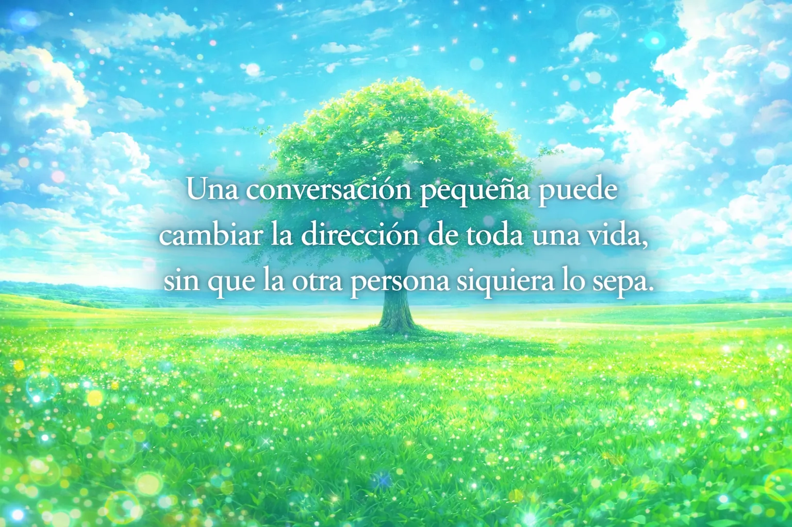
Hay conversaciones
que duran solo unos minutos.
Palabras simples.
Frases normales.
Nada que parezca importante.
A veces pasan
en un lugar cualquiera.
En una calle.
En una sala.
En un momento cualquiera de la vida.
La otra persona
tal vez ni lo recuerda.
Para ella
fue solo otra conversación más.
Algo pequeño.
Algo que olvidó
al día siguiente.
Pero para ti
fue distinto.
Porque una de esas frases
se quedó contigo.
Tal vez fue algo simple.
Algo como:
“Deberías intentarlo.”
“Oye, tú eres bueno en eso.”
“No tengas miedo.”
Tal vez esa persona
lo dijo sin pensar demasiado.
Tal vez ni siquiera sabía
lo que estaba diciendo.
Pero esas palabras
se quedaron contigo.
Durante días.
Durante meses.
A veces durante años.
Y poco a poco
empezaron a cambiar cosas.
Tus decisiones.
Tus pensamientos.
La forma en que veías algo.
Hasta que un día
te diste cuenta
de que tu vida tomó un camino distinto.
Y todo empezó
por una conversación pequeña.
Lo curioso
es que la otra persona
probablemente nunca lo supo.
Nunca supo
que sus palabras
te dieron valor.
Que te ayudaron a intentar algo.
Que cambiaron algo dentro de ti.
Para ella
fue solo un momento más.
Una conversación cualquiera.
Pero para ti
fue uno de esos momentos
que cambian el rumbo
de una vida entera.
Y tal vez
eso también es parte
de lo extraño de vivir.
Que a veces
las cosas que más nos cambian
nacen de momentos
tan pequeños
que nadie más
se da cuenta.
Siguiente
...
Último